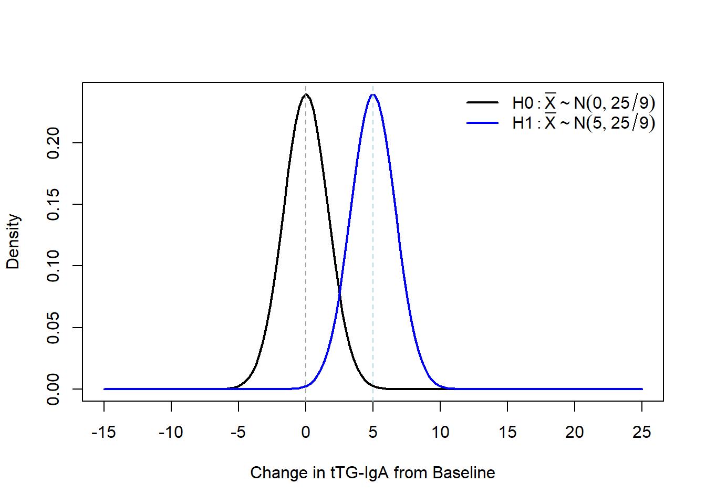
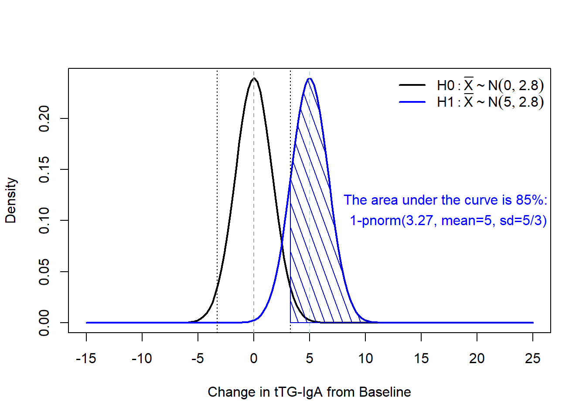
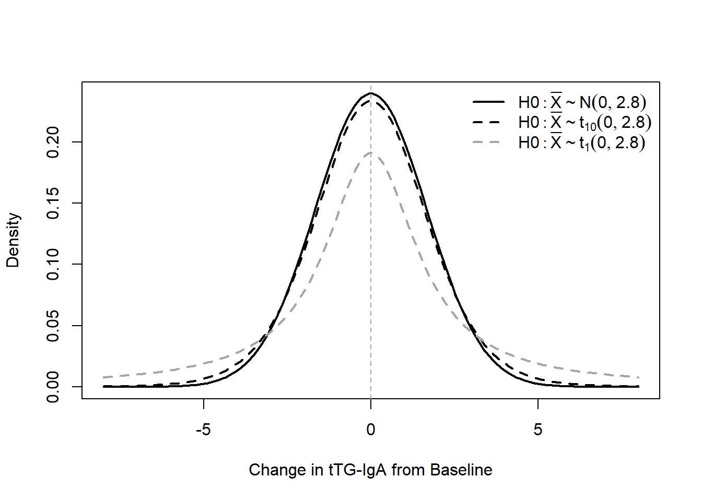
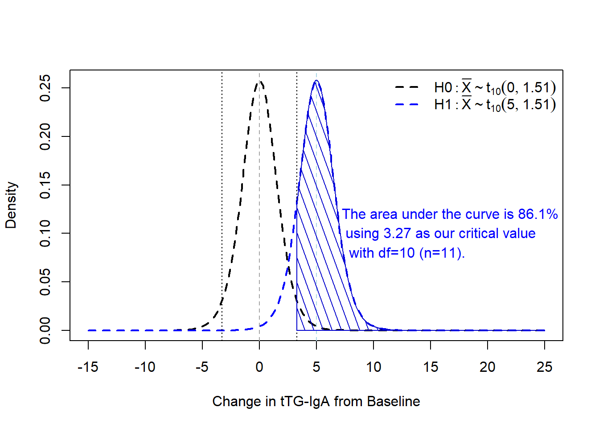

Code
qnorm(0.83) # the value of "Z" where its cumulative probability under a standard normal distribution is 0.83[1] 0.9541653Code
qnorm(0.975) # similarly, the value of "Z" where the CDF indicates 0.975 area under the curve[1] 1.959964Alex Kaizer
University of Colorado-Anschutz Medical Campus
This page is part of the University of Colorado-Anschutz Medical Campus’ BIOS 6618 Recitation collection. To view other questions, you can view the BIOS 6618 Recitation collection page or use the search bar to look for keywords.
Power and type I error rates are some of the more challenging aspects of statistics. They naturally have strange interpretations and don’t always follow a natural way of thinking. In this recitation we will focus heavily on these concepts as they relate to the homework and statistics more generally.
| Reality → What we decide ↓ |
\(H_0\) True | \(H_0\) False/\(H_1\) True |
|---|---|---|
Fail to reject \(H_0\) |
Correct Probability of correct decision = \(1-\alpha\) = level of confidence |
Type II Error P(Type II Error)=\(\beta\) |
Reject \(H_0\) |
Type I Error P(Type I Error) = \(\alpha\) (level of significance) |
Correct Probability of correct decision = \(1-\beta\) = Power |
Our 2x2 table summarizes the unknown reality of our hypothesis test and the conclusions we make based on a sample we collect to run the hypothesis test on. We see that there are four possible outcomes, two of which are correct and two of which represent erroneous conclusions. It is these erroneous conclusions that lead to Type I and Type II Errors, which are the probability of a false positive or false negative, respectively.
When we make the assumption that the standard deviation is known or unknown for a power calculation, we end up two different conclusions as to the possible power, needed sample size, the difference we can detect, etc. This is because the assumption of known standard deviation allows us to use the normal distribution for our power calculation, whereas the unknown standard deviation implies we have to estimate the SD from our sample and we end up using the t-distribution.
The reason for the distributional change is that we need to account for the additional uncertainty introduced by estimating the SD. If we treat the SD as known then it is a constant value (i.e., whatever we “know” it to be). If the SD is unknown, we know the sampling distribution is \(\chi^2_{n-1}\) (where \(n-1\) is our degrees of freedom).
A new treatment for celiac disease, an autoimmune condition where people cannot eat wheat, barley, or rye due to the body perceiving it as an immune threat, has been developed. Previously the only “treatment” for celiac disease was a strict adherence to a gluten-free diet, but a researcher believes the new treatment will allow individuals to eat foods that may have been cross-contaminated with gluten without activating their immune system and destroying their small intestine.
One way to measure the effectiveness of the treatment is examine the change in the level of antibodies in a participant’s blood after exposure to cross-contaminated meals. One such antibody test is the Tissue Transglutaminase IgA antibody (tTG-IgA) test. The researcher desires 83% power to detect a change of 5 U/mL (units per milliliter) with \(\alpha=0.05\) and \(\sigma=5\).
Let’s first calculate the known SD case: \[ n = \frac{\sigma^2 \left( Z_{1-\beta} + Z_{1-\frac{\alpha}{2}} \right)^2}{(\mu_0 - \mu_1)^2} \]
We know from our problem that we need to calculate \(Z_{1-\beta} = Z_{0.83}\) and \(Z_{1-\frac{\alpha}{2}} = Z_{0.975}\). We can do this in R with the qnorm function:
[1] 0.9541653[1] 1.959964\(\begin{aligned} n =& \; \frac{\sigma^2 \left( Z_{1-\beta} + Z_{1-\frac{\alpha}{2}} \right)^2}{(\mu_0 - \mu_1)^2} \\ =& \; \frac{5^2(Z_{0.83} + Z_{0.975})^2}{5^2} \\ =& \; \frac{5^2 (0.95 + 1.96)^2}{25} \\ =& \; 8.4681 \end{aligned}\)
When the SD is known we would need to enroll 9 participants (remember we need to round up, especially if our investigator wants at least 83% power).
Let’s graphically compare our distribution of the null and alternative distribution for \(\bar{X}\) under the known SD assumption first. Recall, \(\bar{X} \sim N(\mu,\frac{\sigma^2}{n})\), so for our sample size calculation we have \(\bar{X} \sim N(\mu,\frac{25}{9})\).

Under \(H_0\) we know that we would need to enroll 9 participants to achieve at least 83% power. We can calculate what this corresponds to by doing some algebra with our standard normal \(Z\): \[ Z_{0.975} = 1.96 = \frac{\bar{x}-\mu}{\sigma / \sqrt{n}} = \frac{\bar{x}-0}{5 /\sqrt{9}} \implies \bar{x} = 1.96 \frac{5}{\sqrt{9}} \approx 3.27 \]
If we didn’t want to have the time of our lives doing algebra, we could also leverage the qnorm() function by specifying our given mean and SD:
If we add that information to our figure, we can see that the area under our curve for \(H_1\) is at least 83%:

As we noted on the plot, we achieve 85% power with \(n=9\), \(\sigma=5\), \(\alpha=0.05\), and a detectable difference of 5:
[1] 0.850365[1] 0.850365If we wanted to be more precise with our impractical \(n=8.4681\), we can see we do achieve exactly 83% power:
We can also use the nifty NHST visualization by Kristoffer Magnusson: https://rpsychologist.com/d3/nhst/. The big difference with the visualization tool is that Cohen’s \(d\) is used instead of specifying the mean and standard deviation separately:
\[ d = \frac{\mu - \mu_0}{\sigma} = \frac{5 - 0}{5} = 1 \]
We can confirm our power is 85% in the visualization by setting \(d=1\) and our other parameters.
Next, let’s see what happens for the unknown SD case:
One-sample t test power calculation
n = 10.57855
delta = 5
sd = 5
sig.level = 0.05
power = 0.83
alternative = two.sidedWhen we treat the SD as unknown we now need to enroll 11 participants.
Let’s break down a bit more about why the normal distribution and t-distribution end up with different estimates. When we assume the SD is unknown we now have to estimate it from the data we collect. In the context of our power calculations, it reflects a greater level of uncertainty as to what we are planning for. We can visually see this uncertainty by adding the t-distribution to our \(H_0\) figure:

We can see that as the degrees of freedom increase, the t-distribution gets closer in shape to our normal distribution. This apparent change is notable especially when comparing \(df=1\) to \(df=10\), where smaller degrees of freedom lead to the t-distribution decreasing the peak and increasing the fattiness of the tails. This will have a direct effect if we didn’t change any of our calculations relative to the standard normal distribution.
For example, if we look at the overlap of our two t-distributions under \(H_0\) and \(H_1\) while keeping the known SD critical values from above with our \(n=11\) from the power calculation (where \(\frac{s}{\sqrt{n}}=\frac{5}{\sqrt{11}}=1.51\)):

We can calculate this via the metRology package’s pt.scaled function:
In actuality, since are assuming an unknown SD, we should recalculate the critical value appropriate for this context. Doing so below, with the qt.scaled() function, and applying it to our estimate of power is a little closer to the targeted 83% power:
[1] 3.359046[1] 0.8489082More precisely, enrolling \(n=10.57855\) achieves approximately 83% power:
[1] 3.445844[1] 0.8315566Again, however, in practice we round up to \(n=11\) to ensure at least 83% power is achieved (and because we are unable to enroll fractions of an event or participant).
---
title: "Power and Type I Error with Comparison of Known and Unknown One-Sample Mean Calculations"
author:
name: Alex Kaizer
roles: "Instructor"
affiliation: University of Colorado-Anschutz Medical Campus
toc: true
toc_float: true
toc-location: left
format:
html:
code-fold: show
code-overflow: wrap
code-tools: true
---
```{r, echo=F, message=F, warning=F}
library(kableExtra)
library(dplyr)
library(metRology)
```
This page is part of the University of Colorado-Anschutz Medical Campus' [BIOS 6618 Recitation](/recitation/index.qmd) collection. To view other questions, you can view the [BIOS 6618 Recitation](/recitation/index.qmd) collection page or use the search bar to look for keywords.
# Power and Type I Error Overview
Power and type I error rates are some of the more challenging aspects of statistics. They naturally have strange interpretations and don't always follow a natural way of thinking. In this recitation we will focus heavily on these concepts as they relate to the homework and statistics more generally.
## Relationship of Type I Error, Type II Error, $\alpha$, $\beta$
| Reality → <br>What we decide ↓ | $H_0$ True | $H_0$ False/$H_1$ True |
|:-------------------------------|:-----------------------------------------------------------------------------:|:--------------------------------------------------------------:|
| <br>Fail to reject $H_0$ | *Correct*<br>Probability of correct decision =<br>$1-\alpha$ = level of confidence | *Type II Error*<br><br>P(Type II Error)=$\beta$ |
| <br>Reject $H_0$ | *Type I Error*<br>P(Type I Error) = $\alpha$<br>(level of significance) | *Correct*<br>Probability of correct decision =<br>$1-\beta$ = Power |
Our 2x2 table summarizes the unknown reality of our hypothesis test and the conclusions we make based on a sample we collect to run the hypothesis test on. We see that there are four possible outcomes, two of which are correct and two of which represent erroneous conclusions. It is these erroneous conclusions that lead to Type I and Type II Errors, which are the probability of a false positive or false negative, respectively.
## Known vs. Unknown SD for Power Calculations
When we make the assumption that the standard deviation is known or unknown for a power calculation, we end up two different conclusions as to the possible power, needed sample size, the difference we can detect, etc. This is because the assumption of **known** standard deviation allows us to use the *normal distribution* for our power calculation, whereas the **unknown** standard deviation implies we have to estimate the SD from our sample and we end up using the *t-distribution*.
The reason for the distributional change is that we need to account for the additional *uncertainty* introduced by estimating the SD. If we treat the SD as known then it is a constant value (i.e., whatever we "know" it to be). If the SD is unknown, we know the sampling distribution is $\chi^2_{n-1}$ (where $n-1$ is our degrees of freedom).
### Sample Size Example - Known SD
A new treatment for celiac disease, an autoimmune condition where people cannot eat wheat, barley, or rye due to the body perceiving it as an immune threat, has been developed. Previously the only "treatment" for celiac disease was a strict adherence to a gluten-free diet, but a researcher believes the new treatment will allow individuals to eat foods that may have been cross-contaminated with gluten without activating their immune system and destroying their small intestine.
One way to measure the effectiveness of the treatment is examine the change in the level of antibodies in a participant's blood after exposure to cross-contaminated meals. One such antibody test is the Tissue Transglutaminase IgA antibody (tTG-IgA) test. The researcher desires 83\% power to detect a change of 5 U/mL (units per milliliter) with $\alpha=0.05$ and $\sigma=5$.
Let's first calculate the **known SD** case:
$$ n = \frac{\sigma^2 \left( Z_{1-\beta} + Z_{1-\frac{\alpha}{2}} \right)^2}{(\mu_0 - \mu_1)^2} $$
We know from our problem that we need to calculate $Z_{1-\beta} = Z_{0.83}$ and $Z_{1-\frac{\alpha}{2}} = Z_{0.975}$. We can do this in `R` with the `qnorm` function:
```{r}
qnorm(0.83) # the value of "Z" where its cumulative probability under a standard normal distribution is 0.83
qnorm(0.975) # similarly, the value of "Z" where the CDF indicates 0.975 area under the curve
```
$\begin{aligned}
n =& \; \frac{\sigma^2 \left( Z_{1-\beta} + Z_{1-\frac{\alpha}{2}} \right)^2}{(\mu_0 - \mu_1)^2} \\
=& \; \frac{5^2(Z_{0.83} + Z_{0.975})^2}{5^2} \\
=& \; \frac{5^2 (0.95 + 1.96)^2}{25} \\
=& \; 8.4681
\end{aligned}$
When the **SD is known** we would need to enroll 9 participants (remember we need to round *up*, especially if our investigator wants at least 83\% power).
#### Verifying the **Known** SD Power
Let's graphically compare our distribution of the null and alternative distribution for $\bar{X}$ under the *known* SD assumption first. Recall, $\bar{X} \sim N(\mu,\frac{\sigma^2}{n})$, so for our sample size calculation we have $\bar{X} \sim N(\mu,\frac{25}{9})$.
```{r, echo=FALSE}
xseq <- seq(-15,25,length.out=150) # create vector of possible outcomes from -15 to 25 with a given length
y_known_h0 <- dnorm(xseq, mean=0, sd=5/3) # calculate the PDF over xseq under H0 for known SD
y_known_h1 <- dnorm(xseq, mean=5, sd=5/3) # calculate the PDF over xseq under H1 for known SD
plot( x=xseq, y=y_known_h0, type='l', lwd=2, col='black', xlab='Change in tTG-IgA from Baseline', ylab='Density' )
lines(x=xseq, y=y_known_h1, lwd=2, col='blue')
axis( 1, seq(-15,25,by=10)) # add missing axis marks to x-axis
abline(v=c(0,5), lty=2, col=c('gray65','lightblue')) # add vertical lines at H0: mu=0 and H1: mu=5
legend('topright', bty='n', lwd=c(2,2), lty=c(1,1), col=c('black','blue'), legend=expression(H0: bar(X) %~% N(0,25/9), H1: bar(X) %~% N(5,25/9)) )
```
Under $H_0$ we know that we would need to enroll 9 participants to achieve *at least* 83\% power. We can calculate what this corresponds to by doing some algebra with our standard normal $Z$:
$$ Z_{0.975} = 1.96 = \frac{\bar{x}-\mu}{\sigma / \sqrt{n}} = \frac{\bar{x}-0}{5 /\sqrt{9}} \implies \bar{x} = 1.96 \frac{5}{\sqrt{9}} \approx 3.27 $$
If we didn't want to have the time of our lives doing algebra, we could also leverage the `qnorm()` function by specifying our given mean and SD:
```{r}
qnorm(0.975, mean=0, sd=sqrt(25/9))
```
If we add that information to our figure, we can see that the area under our curve for $H_1$ is at least 83\%:
```{r, echo=FALSE}
xseq <- seq(-15,25,length.out=150) # create vector of possible outcomes from -15 to 25 with a given length
y_known_h0 <- dnorm(xseq, mean=0, sd=5/3) # calculate the PDF over xseq under H0 for known SD
y_known_h1 <- dnorm(xseq, mean=5, sd=5/3) # calculate the PDF over xseq under H1 for known SD
plot( x=xseq, y=y_known_h0, type='l', lwd=2, col='black', xlab='Change in tTG-IgA from Baseline', ylab='Density' )
lines(x=xseq, y=y_known_h1, lwd=2, col='blue')
axis( 1, seq(-15,25,by=10)) # add missing axis marks to x-axis
abline(v=c(0,5), lty=2, col=c('gray65','lightblue')) # add vertical lines at H0: mu=0 and H1: mu=5
legend('topright', bty='n', lwd=c(2,2), lty=c(1,1), col=c('black','blue'), legend=expression(H0: bar(X) %~% N(0,2.8), H1: bar(X) %~% N(5,2.8)) )
abline(v=c(-3.27,3.27),lty=3, col='black')
polygon( x=c(3.27,seq(3.27,15,length=100),25), y=c(0,dnorm(seq(3.27,15,length=100),mean=5, sd=5/3),0), density=10, col='blue3', angle=110 )
text(x=7.3,y=0.12,pos=4,col='blue','The area under the curve is 85%:')
text(x=7.8,y=0.1,pos=4,col='blue','1-pnorm(3.27, mean=5, sd=5/3)')
```
As we noted on the plot, we achieve 85\% power with $n=9$, $\sigma=5$, $\alpha=0.05$, and a detectable difference of 5:
```{r}
1 - pnorm(3.27, mean=5, sd=5/3) # upper AUC for H1
pnorm(3.27, mean=5, sd=5/3, lower.tail=F) # upper AUC for H1 specified with lower.tail argument
```
If we wanted to be more precise with our impractical $n=8.4681$, we can see we do achieve exactly 83\% power:
```{r}
specific_n <- (qnorm(0.83)+qnorm(0.975))^2 # from our "by hand" formula
1 - pnorm(qnorm(0.975, mean=0, sd=sqrt(25/specific_n)), mean=5, sd=5/sqrt(specific_n) )
```
#### Compare Results to NHST Visualization
We can also use the nifty NHST visualization by Kristoffer Magnusson: [https://rpsychologist.com/d3/nhst/](https://rpsychologist.com/d3/nhst/). The big difference with the visualization tool is that Cohen's $d$ is used instead of specifying the mean and standard deviation separately:
$$ d = \frac{\mu - \mu_0}{\sigma} = \frac{5 - 0}{5} = 1 $$
We can confirm our power is 85% in the visualization by setting $d=1$ and our other parameters.
### Sample Size Example - Unknown SD
Next, let's see what happens for the **unknown SD** case:
```{r}
power.t.test(n=NULL, delta=5, sd=5, sig.level=0.05, power=0.83, type='one.sample')
```
When we treat the SD as *unknown* we now need to enroll 11 participants.
#### But *Why* Does This Happen?
Let's break down a bit more about *why* the normal distribution and t-distribution end up with different estimates. When we assume the SD is *unknown* we now have to estimate it from the data we collect. In the context of our power calculations, it reflects a greater level of uncertainty as to what we are planning for. We can visually see this uncertainty by adding the t-distribution to our $H_0$ figure:
```{r, echo=F}
xseq <- seq(-8,8,length.out=150) # create vector of possible outcomes from -15 to 25 with a given length
y_known_h0 <- dnorm(xseq, mean=0, sd=5/3) # calculate the PDF over xseq under H0 for known SD
y_known_h1 <- dnorm(xseq, mean=5, sd=5/3) # calculate the PDF over xseq under H1 for known SD
y_unknown_h0 <- dt.scaled(xseq, df=11-1, mean=0, sd=5/3)
y_unknown_h0_df1 <- dt.scaled(xseq, df=1, mean=0, sd=5/3)
plot( x=xseq, y=y_known_h0, type='l', lwd=2, col='black', xlab='Change in tTG-IgA from Baseline', ylab='Density' )
lines(x=xseq, y=y_unknown_h0, lwd=2, lty=2, col='black')
lines(x=xseq, y=y_unknown_h0_df1, lwd=2, lty=2, col='gray65')
#axis( 1, seq(-15,25,by=10)) # add missing axis marks to x-axis
abline(v=c(0), lty=2, col=c('gray65')) # add vertical line at H0: mu=0
legend('topright', bty='n', lwd=c(2,2,2), lty=c(1,2,2), col=c('black','black','gray65'), legend=expression(H0: bar(X) %~% N(0,2.8), H0: bar(X) %~% t[10](0,2.8), H0: bar(X) %~% t[1](0,2.8)) )
```
We can see that as the degrees of freedom increase, the t-distribution gets closer in shape to our normal distribution. This apparent change is notable especially when comparing $df=1$ to $df=10$, where smaller degrees of freedom lead to the t-distribution decreasing the peak and increasing the fattiness of the tails. This will have a direct effect if we didn't change any of our calculations relative to the standard normal distribution.
For example, if we look at the overlap of our two t-distributions under $H_0$ and $H_1$ while keeping the known SD critical values from above with our $n=11$ from the power calculation (where $\frac{s}{\sqrt{n}}=\frac{5}{\sqrt{11}}=1.51$):
```{r, echo=F}
xseq <- seq(-15,25,length.out=150) # create vector of possible outcomes from -15 to 25 with a given length
y_known_h0 <- dnorm(xseq, mean=0, sd=5/3) # calculate the PDF over xseq under H0 for known SD
y_known_h1 <- dnorm(xseq, mean=5, sd=5/3) # calculate the PDF over xseq under H1 for known SD
y_unknown_h0 <- dt.scaled(xseq, df=11-1, mean=0, sd=5/sqrt(11))
y_unknown_h1 <- dt.scaled(xseq, df=11-1, mean=5, sd=5/sqrt(11))
plot( x=xseq, y=y_unknown_h0, type='l', lty=2, lwd=2, col='black', xlab='Change in tTG-IgA from Baseline', ylab='Density' )
lines(x=xseq, y=y_unknown_h1, lwd=2, lty=2, col='blue')
axis( 1, seq(-15,25,by=10)) # add missing axis marks to x-axis
abline(v=c(0,5), lty=2, col=c('gray65','lightblue')) # add vertical lines at H0: mu=0 and H1: mu=5
legend('topright', bty='n', lwd=c(2,2), lty=c(2,2), col=c('black','blue'), legend=expression(H0: bar(X) %~% t[10](0,1.51), H1: bar(X) %~% t[10](5,1.51)) )
abline(v=c(-3.27,3.27),lty=3, col='black')
polygon( x=c(3.27,seq(3.27,15,length=100),25), y=c(0,dt.scaled(seq(3.27,15,length=100),mean=5, sd=5/sqrt(11), df=11-1),0), density=10, col='blue3', angle=110 )
text(x=6.5,y=0.12,pos=4,col='blue','The area under the curve is 86.1%')
text(x=6.8,y=0.10,pos=4,col='blue','using 3.27 as our critical value')
text(x=7.1,y=0.08,pos=4,col='blue','with df=10 (n=11).')
```
We can calculate this via the `metRology` package's `pt.scaled` function:
```{r, message=F}
library(metRology)
1 - pt.scaled(3.27, df=10, mean=5, sd=5/sqrt(11))
```
In actuality, since are assuming an *unknown SD*, we should recalculate the critical value appropriate for this context. Doing so below, with the `qt.scaled()` function, and applying it to our estimate of power is a little closer to the targeted 83\% power:
```{r}
qt.scaled(0.975, df=11-1, mean=0, sd=5/sqrt(11)) # calculate the critical value based on our unknown SD
1 - pt.scaled(3.36, df=11-1, mean=5, sd=5/sqrt(11)) # calculate power under critical value
```
More precisely, enrolling $n=10.57855$ achieves approximately 83\% power:
```{r}
n <- 10.57855 # use n from power.t.test above
crit_tdist_n <- qt.scaled(0.975, df=n-1, mean=0, sd=5/sqrt(n)) # calculate the critical value based on our unknown SD
crit_tdist_n # critical value to compare to 3.36 above
1 - pt.scaled(crit_tdist_n, df=n-1, mean=5, sd=5/sqrt(n)) # calculate power under critical value
```
Again, however, in practice we round up to $n=11$ to ensure *at least* 83\% power is achieved (and because we are unable to enroll fractions of an event or participant).